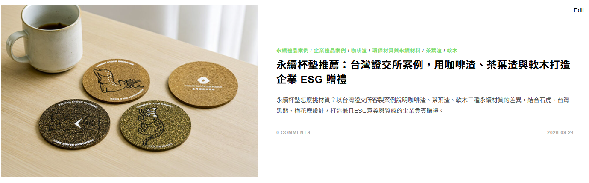
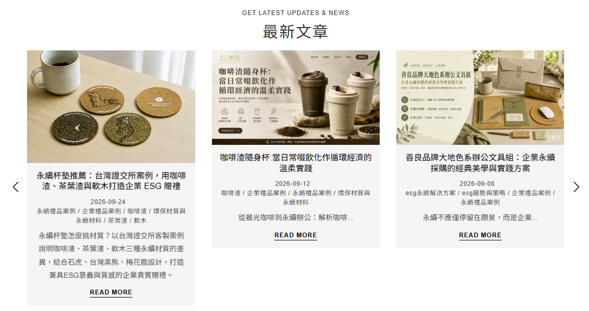

策略摘要：以台灣證交所的實際客製案例建立企業採購信任，並透過咖啡渣、茶葉渣與軟木的材質比較，承接「永續杯墊」相關的產品探索、材質比較與企業客製搜尋需求，最後導向 Kindmade 的永續禮品規劃服務。
主要關鍵字
永續杯墊
搜尋意圖
產品探索＋材質比較
主要受眾
企業採購與 ESG 團隊
內容角色
案例證明＋詢價導流
為什麼寫這篇文章
這篇文章不是只記錄一個完成案例，而是把企業採購者真正會問的問題，整理成可以被搜尋、比較與採取行動的內容。
承接具體產品需求
搜尋「永續杯墊」的人通常已經在找產品、材質或客製方案，距離採購決策比一般永續知識型搜尋更近。
建立企業案例可信度
以台灣證交所實際應用為主軸，讓企業客戶看見永續材質如何落地於正式、具代表性的貴賓贈禮情境。
擴大材質關鍵字入口
同時說明咖啡渣、茶葉渣與軟木，可承接不同材料名稱的搜尋，也能串連 Kindmade 的永續材質內容群。
把流量導向商業詢問
文章從案例、材質比較、規劃重點一路走到客製服務與 FAQ，讓讀者能自然進入詢價或進一步了解產品。
預期搜尋關鍵字
關鍵字以「永續杯墊」為核心，再向材質、客製與企業贈禮情境延伸，避免只依賴單一詞組。
| 關鍵字層級 | 預期關鍵字 | 搜尋者需求 |
|---|---|---|
| 主要關鍵字 | 永續杯墊 | 尋找符合永續概念的杯墊產品、材質或供應商。 |
| 次要關鍵字 | 環保杯墊、咖啡渣杯墊、茶葉渣杯墊、軟木杯墊 | 比較不同環保材料的特色、外觀與使用情境。 |
| 商業關鍵字 | 永續杯墊客製、環保杯墊客製、企業 ESG 贈禮、企業永續禮品 | 尋找可承接企業設計、生產與採購需求的合作廠商。 |
| 長尾關鍵字 | 永續杯墊推薦、環保杯墊材質、咖啡渣杯墊客製、企業貴賓贈禮 ESG | 帶著較明確條件進行評估，具有較高的詢問與轉換可能。 |
| 品牌案例詞 | 台灣證交所永續杯墊、台灣證交所 ESG 贈禮 | 查找案例背景、合作成果或相似專案參考。 |
內容如何支援搜尋與轉換
1
案例吸引
用台灣證交所與保育動物設計建立辨識度，讓讀者快速理解產品完成後的樣貌與使用場合。
2
材質比較
回答咖啡渣、茶葉渣、軟木的來源、質感與適用情境，滿足採購前的比較需求。
3
採購考量
整理厚度、觸感、吸水性、圖像與 Logo 等實務項目，降低企業規劃永續贈禮時的不確定性。
4
服務承接
說明 Kindmade 如何協助選材、設計與包裝，把內容閱讀自然銜接到服務能力。
5
FAQ 補強
回應氣味、耐用、包裝與 MOQ 等常見疑問，同時增加長尾問句被搜尋與 AI 摘要引用的機會。
6
行動轉換
以 LINE 詢問、材質介紹與杯墊產品作為下一步，承接不同準備程度的企業訪客。
目前頁面 SEO 設定
後續觀察指標
文章上架後可用 Google Search Console 與網站轉換資料觀察以下訊號：
- 「永續杯墊」及材質相關關鍵字的曝光、點擊與平均排名。
- 長尾詞是否開始出現，例如「咖啡渣杯墊客製」與「環保杯墊材質」。
- 文章進站後前往材質頁、杯墊產品頁及 LINE 詢問的點擊比例。
- 企業採購或 ESG 贈禮相關詢問是否提及杯墊、材料比較或案例參考。
上架後畫面參考
以下為文章正式發布後在官網不同位置的呈現，供品牌方確認封面圖、標題、摘要、日期與分類資訊的實際效果。

